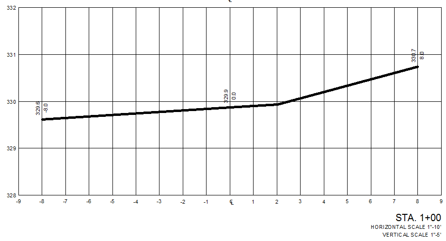
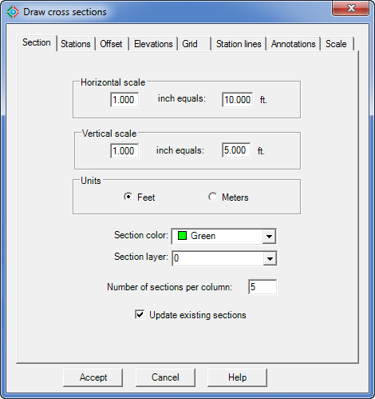
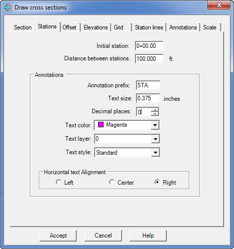
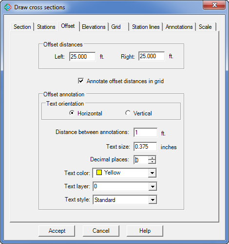
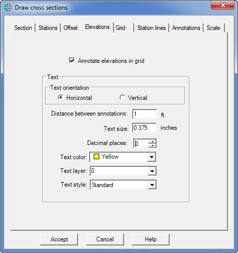
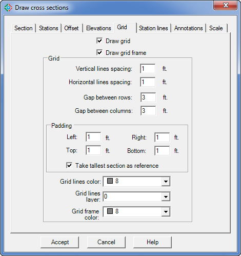
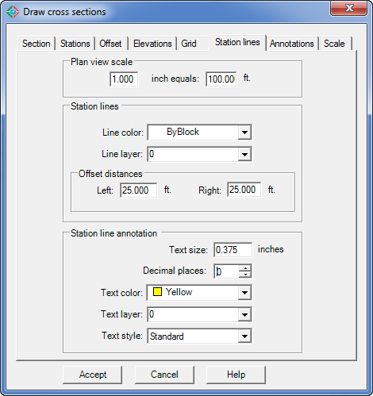
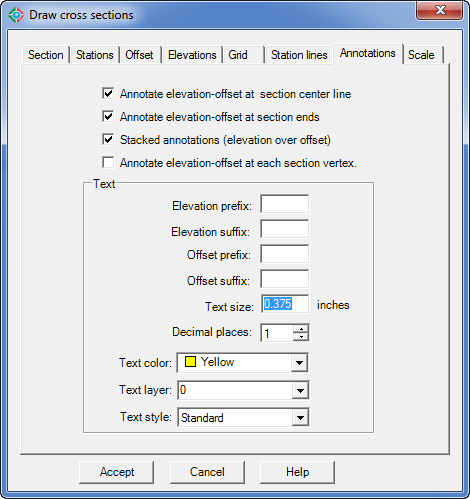
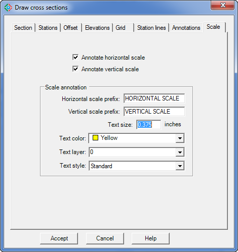

|
|
Toolbar:
Menu: CAD-Earth > Mesh commands > Draw cross section from mesh
|
|
|
Command line: CE_SECTION
Prompts:
Select triangulation mesh: Select polyline inside mesh:
CAD-Earth version: Plus, Premium. |
.png)
.png)
Command description:
After a terrain mesh is imported to AutoCAD with the CE_IMPGEMESH command, a polyline can be drawn to indicate a path where cross sections will be processed. Using this CAD-Earth command, station lines with station annotations will be inserted along this polyline and the corresponding cross sections drawings will be created with elevation, offset, station and scale annotations. The user can specify the color, layer, text style, size and placement for each cross section element.

Cross section drawing example
Dialog box settings (Section tab):

Draw cross sections dialog box (Section tab)
ØHorizontal scale. This value will be used to convert text and symbol height from the units selected (feet or meters) to drawing units. Typical values are 1"-10' (1 inch equals 10 feet) to 1"-20' (1 inch equals 20 feet) for feet units and 1:50 (1 meter equals 50 meters) and 1:100 (1 meter equals 100 meters) for units in meters.
ØVertical scale. Typical values are 1"-5' (1 inch equals 5 feet) to 1"-10' (1 inch equals 10 feet) for feet units and 1:25 (1 meter equals 25 meters) and 1:50 (1 meter equals 50 meters) for units in meters.
ØUnits. Can be in feet or meters. The units must correspond with the units used when the corresponding terrain mesh was created.
ØSection color. The color selected will be used to draw the polyline representing the cross section.
ØSection layer. The polyline representing the cross section will be drawn in the layer selected.
ØNumber of sections per column. The resulting cross section drawings will be piled in columns from bottom to top and left to right. When the number of cross section per column is reached, a new column of section drawings will be created.
ØUpdate existing sections. If previous section drawings were created using the selected polyline, they will be updated to reflect the new values.
Dialog box settings (Stations tab):

Draw cross sections dialog box (Stations tab)
ØInitial station. Cross section and station line annotations will begin with this value.
ØDistance between stations. Cross sectioning will be calculated at each station, perpendicular to the polyline, with a length equal to the sum of the left and right offset distances.
ØAnnotations.
•Annotation prefix. Text that will be added before each station annotation of cross section drawings.
•Text size. Height for station annotations in cross section drawings.
•Decimal places. Number of digits displayed to the right of the decimal point in station annotations.
•Text color. The color selected will be used for station annotations.
•Text layer. Stations annotations will be created in the layer selected.
•Text style. The selected text style will be used for station annotations.
•Horizontal alignment. Stations annotations can be aligned to the left, center or right at the bottom of each cross section drawing.
Dialog box settings (Offset tab):

Draw cross sections dialog box (Offset tab)
ØOffset distances. The sum of left and right offset distances will be the horizontal length of the cross sections. These distances are perpendicular to the center line at each station point, and are relative to someone standing on the chainage line who is looking in the direction of increasing chainage.
ØAnnotate offset distances in grid. Offset distance annotations will be placed at the bottom of each cross section grid, separated at the specified distance between offset annotations.
ØOffset annotation.
•Text orientation. Offset annotations can be placed horizontally or vertically at the bottom of each cross section grid.
•Distance between annotations. Offset annotations will be placed at the bottom of each cross section grid at intervals equal to the specified distance.
•Text size. Height for offset annotations according to the units selected (inches or millimeters).
•Decimal places. Number of digits displayed to the right of the decimal point for offset annotations.
•Text color. Offset annotations will be created using the selected color.
•Text layer. Offset annotations will be created in the layer selected.
•Text style. The text style selected will be used for offset annotations.
Dialog box settings (Elevations tab):

Draw cross sections dialog box (Elevations tab)
ØAnnotate elevations in grid. Elevation annotations will be placed at the left side of each cross section grid.
ØText.
•Text orientation. Elevation annotations can be placed horizontally or vertically at the left side of each cross section grid.
•Distance between annotations. Elevation annotations will be placed at intervals equal to the distance indicated at the left side of each cross section grid.
•Text size. Height for elevation annotations text.
•Decimal places. Number of digits displayed to the right of the decimal point for elevation annotations.
•Text color. The selected color will be used for elevation annotations text.
•Text layer. Elevation annotations will be created in the layer selected.
•Text style. The selected text style will be used for elevation annotations.
Dialog box settings (Grid tab):

Draw cross sections dialog box (Grid tab)
ØDraw grid. Select to draw horizontal and vertical lines as reference in each cross section drawing.
ØDraw grid frame. Choose to draw horizontal and vertical lines outlining each cross section drawing.
ØGrid.
•Vertical line spacing. Interval distance between each grid vertical line. Value must be of integer type.
•Horizontal line spacing. Interval distance between each grid horizontal line. Value must be of integer type.
•Gap between rows. Vertical distance between the top of one cross section grid and the bottom of the next.
•Gap between columns. Horizontal distance between the right side of a cross section grid and the left side of the next.
•Padding. Distances around the left, right, top and bottom of a cross section extent. Values must be a multiple of the vertical or horizontal grid lines spacing.
•Grid lines color. The selected color will be used for grid lines.
•Grid lines layer. Cross section grid lines will be created in the layer selected.
•Grid frame color. The selected color will be used for horizontal an vertical lines outlining each cross section grid extents.
Dialog box settings (Station lines tab):

Draw cross sections dialog box (Station lines tab)
ØPlan view scale. Values entered will be used to convert station line annotation text size from the units selected (feet or meters) to drawing units. Typical values are 1"-100' (1 inch equals 100 feet) to 1"- 500' (1 inch equals 500 feet) for feet units and 1:500 (1 meter equals 500 meters) and 1:5000 (1 meter equals 5000 meters) for units in meters.
ØStations lines. These will be drawn perpendicular to each station point on the polyline, with an extension equal to the sum of the left and right offset distance. They will take, as reference, the direction of chainage and at intervals equal to the separation distance specified. Station annotations will be placed at each station line end. Station lines will serve as a position reference of each cross section in plan view.
•Line color. The selected color will be used for station lines placed on the polyline.
•Line layer. Station lines will be drawn in the layer selected.
•Offset distances. The length of station lines will be the sum of the left and right offset distances, and they will be measured from the station point to the left or right, taking as reference the view at the direction of increasing chainage.
ØStation line annotation. Station annotations will be placed at each station line end to mark the corresponding chainage.
•Text size. Height for elevation station line annotations text.
•Decimal places. Number of digits displayed to the right of the decimal point for station line annotations.
•Text color. The selected color will be used for station line annotations.
•Text layer. Station line annotations will be created in the layer selected.
•Text style. The selected text style will be used for station line annotations.
Dialog box settings (Annotations tab):

Draw cross sections dialog box (Annotations tab)
ØAnnotate elevation-offset at section center line. Annotations indicating the elevation and offset distance will be placed at each cross section center point.
ØAnnotate elevation-offset at sections ends. Annotations indicating the elevation and offset distance will be placed at each cross section end.
ØStacked annotations (elevation over offset). Horizontally oriented annotations will be created placing offset annotations directly below elevation annotations. If this option is not checked, vertically oriented annotations will be created, placing elevation annotations to the left of a vertical leader line and offset annotations to the right.
ØAnnotate elevation-offset at each section vertex. Elevation and offset annotations will be placed at each cross section inflection point.
ØText.
•Elevation prefix. Text will be added before each elevation annotation.
•Elevation suffix. Text will be appended to the end of each elevation annotation.
•Offset prefix. Text will be added before each offset annotation.
•Offset suffix. Text will be appended to the end each offset annotation.
•Text size. Height for elevation and offset annotations.
•Decimal places. Number of digits displayed to the right of the decimal point for elevation and offset annotations.
•Text color. The selected color will be used for elevation and offset annotations.
•Text layer. Elevation and offset annotations will be created in the layer selected.
•Text style. The selected text style will be used for elevation and offset annotations.
Dialog box settings (Scale tab):

Draw cross sections dialog box (Scale tab)
ØAnnotate horizontal and vertical scale. An annotation indicating the horizontal and vertical scale will be placed below the station annotation at the bottom of each cross section drawing.
ØScale annotation.
•Horizontal scale prefix. Text that will be added before the cross section horizontal scale annotation.
•Vertical scale prefix. Text that will be added before the cross section vertical scale annotation.
•Text size. Height for cross section horizontal and vertical scale annotations.
•Text color. The selected color will be used for cross section horizontal and vertical scale annotations.
•Text layer. Cross section horizontal and vertical scale annotations will be created in the layer selected.
•Text style. The selected text style will be used for cross section horizontal and vertical scale annotations.
Tips:
•To exaggerate vertical section elevations, use a value less than the horizontal scale value. e.g.: if you set the horizontal scale to 1"-10' and set the vertical scale to 1"-5' the section elevations will be scaled by a factor of two.
•The terrain configuration in Google Earth is not as accurate as a configuration obtained by a site survey. The resulting cross section drawings are not recommended for projects where high accuracy is required.
•Select the 'Update existing sections' option to quickly view changes after each run.
Related topics:
•Import terrain mesh from Google Earth.
Copyright © 2023 Arqcom Software
Google Earth© is a registered trademark of Google inc. All other trademarks are the property of their respective owners.